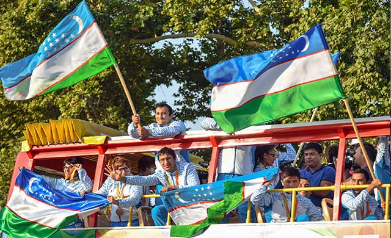
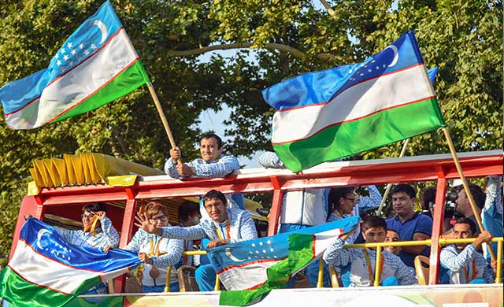

MATONAT, JASORAT VA VATANPARVARLIK NAMUNASI


O‘zbekiston sportchilari Braziliyaning Rio-de-Janeyro shahrida o‘tgan XV Paralimpiya o‘yinlarida 8 oltin, 6 kumush va 17 bronza medalni qo‘lga kiritdi
Toshkent xalqaro aeroportida 21 sentyabr' kuni ushbu nufuzli musobaqa g‘oliblari, sovrindorlari va ishtirokchilarini tantanali kutib olish marosimi bo‘ldi. Shu munosabat bilan bu yerga davlat va jamoat tashkilotlari vakillari, sportchilar, paralimpiyachilarimizning ota-onalari, jurnalistlar yig‘ildi.
Joriy yilgi sport mavsumida O‘zbekiston farzandlari dunyoning nufuzli musobaqalari – XXXI yozgi Olimpiya va XV Paralimpiya o‘yinlarida butun jahonga mamlakatimizning ulkan salohiyatini namoyon qildi. Ajdodlari buyuk millatning avlodlari ham buyuk ishlarga qodirligini, yurtimiz yoshlarining mardlik va jasoratda, shijoat va matonatda, iqtidoru iste'dodda hech kimdan kam emasligini, aksincha, manaman degan davlat yoshlaridan ustun ekanini isbotladi.
Sportchilarimizning XXXI yozgi Olimpiya o‘yinlarida xalqqa ulashgan, elning qaddini, g‘urur-iftixorini tog‘dek ko‘targan muzaffar onlarining hovuri bosilmay turib, yana g‘alaba nashidasi, baxtiyor lahzalar shukuhi qalblarimizni chulg‘ab oldi.
Braziliyaning Rio-de-Janeyro shahrida o‘tgan XV Paralimpiya o‘yinlarida sportchilarimiz erishgan natijalar ana shunday tuyg‘ularni baxsh etdi. Dunyo miqyosidagi nufuzli sport anjumanida bir yuz oltmishdan ziyod davlatdan to‘rt mingdan ortiq sportchi g‘oliblik uchun bahslashdi.
O‘zbekiston paralimpiyachilari ushbu nufuzli musobaqaga puxta tayyorgarlik ko‘rdi. O‘zbekiston Respublikasining Birinchi Prezidenti Islom Karimovning 2013 yil 25 fevraldagi “O‘zbekiston sportchilarini 2016 yilda Rio-de-Janeyro shahrida (Braziliya) bo‘lib o‘tadigan XXXI yozgi Olimpiya va XV Paralimpiya o‘yinlariga tayyorlash to‘g‘risida”gi qarori asosida paralimpiyachilarimiz zamonaviy me'yorlar asosida o‘quv-mashg‘ulot yig‘inlarini o‘tkazishi, tajriba va mahoratini oshirishi, Paralimpiya o‘yinlariga yo‘llanma beradigan nufuzli musobaqalarga tayyorlanishi va ularda munosib qatnashishi uchun barcha shart-sharoit yaratildi.
XV Paralimpiya o‘yinlarida O‘zbekistonning 32 sportchisi dzyudo, suzish, yengil atletika, o‘q otish va pauerlifting turlari bo‘yicha o‘tkazilgan musobaqalarda Vatanimiz sharafini munosib himoya qilib, 8 oltin, 6 kumush va 17 bronza, jami 31 medalga sazovor bo‘ldi. Bu ko‘rsatkich bilan O‘zbekiston sport delegasiyasi 160 dan ortiq davlat orasida o‘n oltinchi, MDH davlatlari o‘rtasida ikkinchi, Osiyo mamlakatlari ichida uchinchi, Markaziy Osiyo davlatlari o‘rtasida birinchi o‘rinni egalladi.
– O‘g‘lim Paralimpiya o‘yinlariga ketish oldidan albatta oltin medal' bilan qaytaman, deb va'da bergandi, – deydi Firdavs Musabekovning onasi Shoira Musabekova. – U va'dasining ustidan chiqib, yuzimizni yorug‘ qildi. O‘g‘limning bu g‘alabasi butun xalqimizning yutug‘i, istiqlol bergan keng imkoniyatlar, O‘zbekiston Respublikasining Birinchi Prezidenti Islom Karimovning yoshlarga ko‘rsatgan mehr va e'tiborining samarasidir. Mamlakatimiz mustaqil bo‘lmaganda o‘g‘lim shunday katta musobaqalarda manaman degan davlat vakillari bilan bellashish imkoniga ega bo‘larmidi?! G‘alaba qozonishini-ku tasavvur ham qilib bo‘lmasdi.
– Biz paralimpiyachilarimiz bilan faxrlanamiz, – deydi XXXI yozgi Olimpiya o‘yinlari g‘olibi Ruslan Nurudinov. – Ularning matonatiga, shijoatiga qoyil qolmay iloj yo‘q. Biz, sportchilar XXXI yozgi Olimpiya o‘yinlaridagi g‘alabamizdan qanday quvongan bo‘lsak, paralimpiyachilarimizning yutug‘idan quvonchimiz ikki hissa oshdi. Zero, ular Paralimpiya o‘yinlarida O‘zbekiston yoshlari nimalarga qodirligini, xalqaro maydonlarda erishayotgan natijalarimiz tasodifiy emasligini yana bir karra isbotladi.
– Sportchilarimizning Paralimpiya o‘yinlaridagi har bir chiqishini katta hayajon bilan kuzatib bordik, – deydi O‘zbekiston xalq artisti Mahmud Namozov. – Bu natijalar, medallar mustaqilligimiz asoschisi, O‘zbekiston Respublikasining Birinchi Prezidenti Islom Karimov rahnamoligida sportni rivojlantirish borasida amalga oshirilgan ulkan islohotlar mevasidir.
...Mana, orziqib kutilgan damlar – ulkan havo kemasidan qo‘llarida Vatanimiz bayrog‘ini mag‘rur ko‘targan sportchilarimiz chiqib kelmoqda. Karnay-surnay sadolari yoshlarning “O‘zbekiston!” degan hayqirig‘iga ulanib ketadi.
Tantanali marosimda so‘zga chiqqan O‘zbekiston Respublikasi Bosh vazirining o‘rinbosari A.Ikromov, O‘zbekiston xalq artisti M.Azizov, ota-onalar nomidan R.Qo‘chqorova paralimpiyachilarimizning bu yuksak g‘alabasi xalqimizga cheksiz g‘urur-iftixor bag‘ishlaganini, O‘zbekiston Respublikasining Birinchi Prezidenti Islom Karimovning mamlakatimizda mustaqillik yillarida sportni rivojlantirishga, bu jarayonda jismoniy imkoniyati cheklangan sportchilarni har tomonlama qo‘llab-quvvatlashga qaratgan e'tibor va g‘amxo‘rlikning ulkan samarasini butun dunyoga namoyon qilganini alohida ta'kidladi.
G‘olib va sovrindor sportchilarimiz nomidan so‘zga chiqqan Sh.Namozov, H.Olimova, M.Tursunxo‘jaev xalqimizning ishonchi, davlatimizning yoshlarga qaratayotgan yuksak e'tibor va g‘amxo‘rligi uchun minnatdorlik bildirdi. Kelgusida bundan-da yuksak g‘alabalarni qo‘lga kiritishga va'da berdi.
Paralimpiya o‘yinlari g‘olib va sovrindorlari, ishtirokchilari, ularning ota-onalari va yaqinlari usti ochiq avtobusga o‘tirib yo‘lga chiqdi. Toshkent xalqaro aeroportidan O‘zbekiston Paralimpiya assosiasiyasi binosiga qadar muzaffar sportchilarimizni kutib olish uchun yig‘ilganlar ularni qutladi: “Barakalla, qudratli yurtning munosib farzandlari! G‘alabangiz muborak bo‘lsin!”
Aholining ijtimoiy himoyaga muhtoj qatlami, jismoniy imkoniyati cheklangan yoshlarni har tomonlama qo‘llab-quvvatlash, moddiy va ma'naviy ko‘mak berish, bilim olishi, salomatligini mustahkamlashi, o‘z qiziqish va intilishiga mos kasb-hunar egallashi, sport bilan shug‘ullanishi, xalqaro maydonlarda matonatini, irodasini, jasoratini ko‘rsatishini ta'minlash doimiy e'tiborda.
Braziliyaning Rio-de-Janeyro shahrida o‘tgan XV Paralimpiya o‘yinlarida O‘zbekiston sportchilarining g‘alabaga bo‘lgan qat'iy ishonchi, tug‘ilib o‘sgan Vatanini baralla madh etishga bo‘lgan intilishi ular ko‘rsatgan natijalarda butun bo‘y basti bilan namoyon bo‘ldi.
O‘zbekiston Respublikasining Birinchi Prezidenti Islom Karimovning 2016 yil 12 iyuldagi O‘zbekiston Respublikasi sportchilarining 2016 yilda Rio-de-Janeyro shahrida (Braziliya) bo‘lib o‘tadigan XXXI yozgi Olimpiya va XV Paralimpiya o‘yinlariga tayyorgarligi va ishtiroki to‘g‘risidagi qarori paralimpiyachilarimizning to‘rt yillikning eng nufuzli musobaqasida munosib qatnashishini ta'minlashda muhim ahamiyat kasb etdi.
Sportchilarimiz Paralimpiya o‘yinlarida erishgan g‘alabalari bilan nafaqat mamlakatimiz, balki dunyo tarixida yangi sahifa ochdi. Paralimpiyachilarimiz sharafiga O‘zbekiston nomi, mustaqil mamlakatimiz madhiyasi baralla yangradi, bayrog‘imiz baland hilpiradi. Ular qayd etgan natijalar, rekordlar, qo‘lga kiritgan medallar jahon hamjamiyati tomonidan keng e'tirof etildi.
Har qanday g‘alaba, erishilgan natija taqqoslanganda yanada zalvorli ko‘rinadi. Birgina misol, London shahrida bo‘lib o‘tgan XIV Paralimpiya o‘yinlarida o‘n nafar sportchimiz ishtirok etgan va bir kumush medalni qo‘lga kiritgan edi. Bu galgi musobaqada oltin medalning o‘zi sakkiztaga yetdi. Ta'kidlash joizki, hatto, qatnashuvchi sportchilari biznikidan bir necha barobar ko‘p bo‘lgan ayrim davlatlar ham shuncha oltin medalga erisha olgani yo‘q. XV Paralimpiya o‘yinlarida 160 dan ziyod davlatdan 83 davlat sportchilarigina medallarni qo‘lga kiritish baxtiga muyassar bo‘ldi, oltin medalga sazovor bo‘lgan davlatlar undan ham kam – 63 tani tashkil etdi.
Sportchilarimiz faqat medallarni qo‘lga kiritibgina qolmay jahon va Paralimpiya o‘yinlari rekordlarini ham yangilab, o‘zlarining ulkan salohiyatga, iste'dodga ega, yuragi shijoatga to‘la ekanini isbotladi. Nufuzli musobaqada sportchilarimiz tomonidan 7 Paralimpiya o‘yinlari, 6 jahon va 12 Osiyo rekordi o‘rnatildi.
Nufuzli musobaqaning dzyudo bo‘yicha bellashuvlarida qatnashgan polvonlarimiz 3 oltin, 1 kumush va 6 bronza medalni qo‘lga kiritib, umumjamoa hisobida birinchi o‘rinni egalladi. Vazni 60 kilogrammgacha bo‘lgan sportchilar o‘rtasidagi bellashuvlarda qatnashgan Sherzod Namozov urugvaylik Xenri Borges, ozarbayjonlik Ramin Ibrohimov, yaponiyalik Makoto Xiroseni yengib, shohsupaning eng yuqori pog‘onasiga ko‘tarildi.
– Paralimpiya o‘yinlaridagi g‘alabamizni mustaqilligimiz asoschisi, O‘zbekiston Respublikasining Birinchi Prezidenti Islom Karimov xotirasiga bag‘ishlaymiz, – deydi Sherzod Namozov. – Olimpiyachilarimizni kutib olish marosimini ko‘rganimizda ularga chin dildan havas qilgan, biz ham nufuzli musobaqada munosib ishtirok etib, g‘alaba qozonamiz, deb niyat qilgan edik. Bugun ana shu niyatimizga yetganimizdan, bizni ham olimpiyachilarimiz kabi katta tantana bilan kutib olishganidan boshimiz osmonga yetdi.Paralimpiya o‘yinlarining suzish bo‘yicha bahslarida sportchilarimiz o‘ziga xos rekord natija qayd etdi.
Xotin-qizlar o‘rtasidagi bahslarda qatnashgan iste'dodli sportchimiz Fotima Omilova bittadan oltin, kumush va bronza medalga sazovor bo‘ldi. U 100 metrga brass usulda suzishda 1 daqiqa 12.45 soniya natija qayd etib, jahon rekordini yangiladi va shohsupaning eng yuqori pog‘onasidan joy oldi. 200 metrga kompleks suzishda kumush, 100 metrga batterflyay usulida suzishda bronza medalni qo‘lga kiritdi.
 


– Paralimpiya o‘yinlarida Vatanimiz sharafini himoya qilish baxtiga muyassar bo‘lganimdan xursandman, – deydi Fotima Omilova. – Nufuzli musobaqada g‘alaba qozonishimda O‘zbekistonga albatta medal' bilan qaytishim, ota-onam, ustozlarim, xalqimizning ishonchini oqlashim kerak, degan qat'iy ishonch menga har tomonlama kuch-quvvat berdi. Zero, mustaqil Vatanimiz sharafini xalqaro maydonlarda himoya qilish, biz, yoshlarni har tomonlama qo‘llab-quvvatlayotgan yurtimizga munosib farzand bo‘lish har birimizning eng ulug‘ maqsadimizdir.
Muslima Odilova 50 metrga erkin va 100 metrga batterflyay usulda suzishda ikkita kumush medal' bilan taqdirlangan bo‘lsa, Shohsanam Toshpo‘latova 50 metrga erkin va 200 mertga kompleks usulda suzishda ikki marta uchinchi o‘rinni egalladi.
100 metr masofaga brass usulda suzish bo‘yicha bahslarda qatnashgan Firdavs Musabekov 1 daqiqa 04.94 soniya natija ko‘rsatib, Paralimpiya o‘yinlarining oltin medaliga sazovor bo‘ldi. 100 metrga batterflyay usulida suzish bahslarida Kirill Pankov kumush, Muzaffar Tursunxo‘jaev bronza medalni qo‘lga kiritdi.
Paralimpiya o‘yinlarining yengil atletika bahslari ham sportchilarimiz uchun medallarga boy bo‘ldi. Ushbu sport turida O‘zbekiston sport delegasiyasi hisobiga dastlabki medalni Husniddin Norbekov keltirdi. Tajribali sportchimiz disk uloqtirish bahslarida 59,75 metr natija qayd etib, birinchi o‘rinni egalladi. Uning ko‘rsatgan natijasi jahon va Paralimpiya o‘yinlari rekordi sifatida qayd etildi.
– Nufuzli musobaqada qo‘lga kiritgan yuqori natijalarimiz mustaqilligimiz ne'mati, mamlakatimizda biz, yoshlarga qaratilayotgan ulkan e'tibor va g‘amxo‘rlikning samarasidir, – deydi Husniddin Norbekov. – Paralimpiya o‘yinlarida biz ana shu mehr va g‘amxo‘rlikni chuqur his qilgan holda bahslarga kirishdik. Bu bizga yanada kuch-g‘ayrat bag‘ishladi.
Aleksandr Svechnikov nayza uloqtirish bahslarida shohsupaning eng yuqori pog‘onasiga ko‘tarildi. Sportchimiz 65,69 metr natija qayd etib, Paralimpiya rekordini yangiladi. Xotin-qizlar o‘rtasida yengil atletikaning nayza uloqtirish bahsida Nozimaxon Qayumova 44,58 metr natija ko‘rsatdi va jahon rekordini o‘rnatib, shohsupaning eng yuqori pog‘onasidan joy egalladi. Yadro uloqtirish musobaqasida Safiya Burxonova kumush medalni qo‘lga kiritdi.
O‘n metrdan pistoletda o‘q otish bahslarida ishtirok etgan Server Ibragimov va pauerlifting bo‘yicha vazni 80 kilogrammgacha bo‘lgan sportchilar bellashuvida qatnashgan Ahror Bozorov O‘zbekiston sport delegasiyasi hisobiga bronza medalni taqdim etdi.
Qisqa qilib aytganda, O‘zbekiston sportchilari XV Paralimpiya o‘yinlarida o‘z mahorati, matonati va shijoatini to‘la namoyon etib, Vatanimiz sharafini munosib himoya qildi. Sportchilarimiz kelajakdagi nufuzli musobaqalarda, jumladan, 2020 yili Yaponiyaning Tokio shahrida bo‘ladigan XVI Paralimpiya o‘yinlarida bundan-da salmoqli natijalarga erishishi shubhasizdir.
Тантанали маросимда Тошкент шаҳар ҳокими Р.Усмонов иштирок этди.
Bayram AYTMURODOV,
O‘zA muxbiri